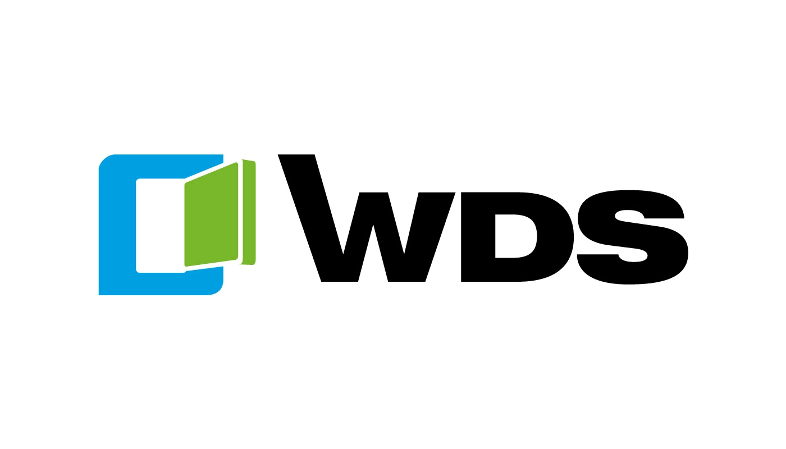
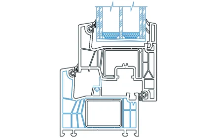

WDS 76 MD - технологічний флагман

- Теплопровідність UwДо 0,79 Вт/М2К
- Звукоізоляція Rw38 Дб
- Повітропроникністьдо Класу 4
- Водонепроникністьдо Класу Е900
- Опір вітровому навантаженнюдо Класу С5
- Ущільнення3 Контури
WDS 76 MD є найбільш технологічно просунутою системою в асортименті профілей WDS.

Армування сталевим профілем забезпечує жорсткість конструкції навіть для великих розмірів вікон та дверей. WDS 76 MD підходить для виготовлення вікон, балконних дверей, фасадних конструкцій та входних груп.

Профіль доступний у білому кольорі та з ламінацією декоративними плівками. Понад 30 варіантів кольорів та текстур — від класичного золотого дуба до сучасного антрациту. Ламінація може бути одно- або двосторонньою.
Ми виготовляємо конструкції з профілю WDS 76 MD на власному виробництві у Дніпрі. Гарантія на профіль — 5 років, на фурнітуру та монтаж — 2 роки. Термін виготовлення — від 7 робочих днів.